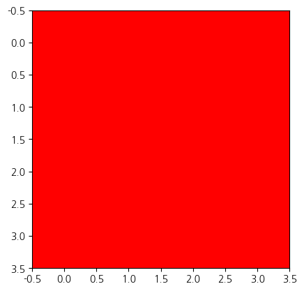
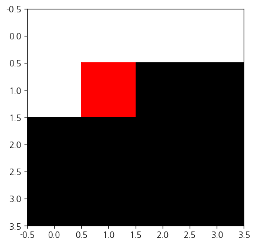
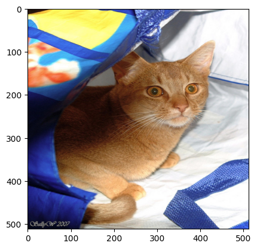
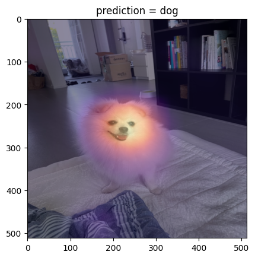
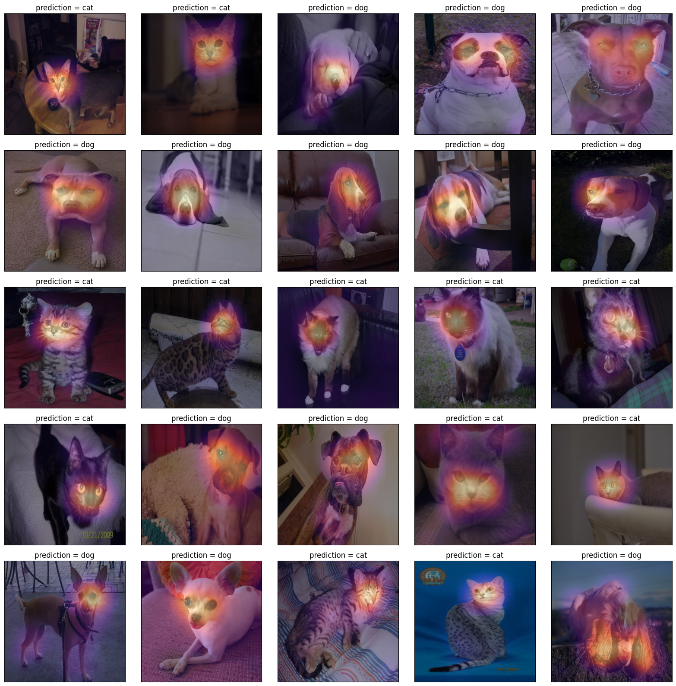
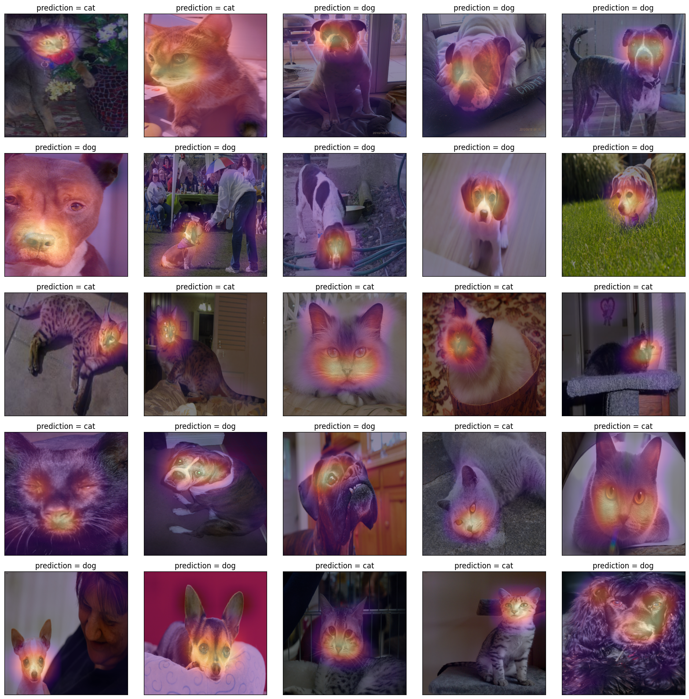

import torch
import torchvision
import PIL
import requests
import io
import matplotlib.pyplot as plt1. imports
2. torch.einsum
A. transpose
- test tensor
tsr = torch.arange(12).reshape(4,3)
tsrtensor([[ 0, 1, 2],
[ 3, 4, 5],
[ 6, 7, 8],
[ 9, 10, 11]])- 행렬을 transpose 하는 방법 1
tsr.t()tensor([[ 0, 3, 6, 9],
[ 1, 4, 7, 10],
[ 2, 5, 8, 11]])- 행렬을 transpose 하는 방법 2
torch.einsum('ij -> ji', tsr)tensor([[ 0, 3, 6, 9],
[ 1, 4, 7, 10],
[ 2, 5, 8, 11]])B. 행렬곱
- test tensors
tsr1 = torch.arange(12).reshape(4,3).float()
tsr2 = torch.arange(15).reshape(3,5).float()
tsr1,tsr2(tensor([[ 0., 1., 2.],
[ 3., 4., 5.],
[ 6., 7., 8.],
[ 9., 10., 11.]]),
tensor([[ 0., 1., 2., 3., 4.],
[ 5., 6., 7., 8., 9.],
[10., 11., 12., 13., 14.]]))- 행렬곱을 수행하는 방법1
tsr1 @ tsr2tensor([[ 25., 28., 31., 34., 37.],
[ 70., 82., 94., 106., 118.],
[115., 136., 157., 178., 199.],
[160., 190., 220., 250., 280.]])- 행렬곱을 수행하는 방법2
torch.einsum('ij, jk -> ik', tsr1,tsr2)tensor([[ 25., 28., 31., 34., 37.],
[ 70., 82., 94., 106., 118.],
[115., 136., 157., 178., 199.],
[160., 190., 220., 250., 280.]])C. img_plt vs img_pytorch
- r,g,b 를 의미하는 tensor
r = torch.zeros(16).reshape(4,4) + 1.0
g = torch.zeros(16).reshape(4,4)
b = torch.zeros(16).reshape(4,4)- torch를 쓰기 위해서는 이미지가 이렇게 저장되어 있어야함
img_pytorch = torch.stack([r,g,b],axis=0).reshape(1,3,4,4)
print(img_pytorch)
print(img_pytorch.shape)tensor([[[[1., 1., 1., 1.],
[1., 1., 1., 1.],
[1., 1., 1., 1.],
[1., 1., 1., 1.]],
[[0., 0., 0., 0.],
[0., 0., 0., 0.],
[0., 0., 0., 0.],
[0., 0., 0., 0.]],
[[0., 0., 0., 0.],
[0., 0., 0., 0.],
[0., 0., 0., 0.],
[0., 0., 0., 0.]]]])
torch.Size([1, 3, 4, 4])img_matplotlib = torch.stack([r,g,b],axis=-1)
print(img_matplotlib)
print(img_matplotlib.shape)
plt.imshow(img_matplotlib)tensor([[[1., 0., 0.],
[1., 0., 0.],
[1., 0., 0.],
[1., 0., 0.]],
[[1., 0., 0.],
[1., 0., 0.],
[1., 0., 0.],
[1., 0., 0.]],
[[1., 0., 0.],
[1., 0., 0.],
[1., 0., 0.],
[1., 0., 0.]],
[[1., 0., 0.],
[1., 0., 0.],
[1., 0., 0.],
[1., 0., 0.]]])
torch.Size([4, 4, 3])
# 잘못된코드
plt.imshow(img_pytorch.squeeze().reshape(4,4,3))
# 올바른코드1
plt.imshow(torch.einsum('cij -> ijc', img_pytorch.squeeze()))
# 올바른코드2
plt.imshow(img_pytorch.squeeze().permute(1,2,0))
3. 이미지 자료 처리
A. 데이터
- 데이터 다운로드
torchvision.__version__'0.20.1'train_dataset = torchvision.datasets.OxfordIIITPet(
root='./data',
split='trainval',
download=True,
target_types='binary-category'
)
test_dataset = torchvision.datasets.OxfordIIITPet(
root='./data',
split='test',
download=True,
target_types='binary-category'
)- 고양이는 0, 강아지는 1
train_dataset[0][0]
train_dataset[0][1]0B. 이미지 변환
- x_pil 을 tensor로 바꾸어 보자
x_pil = train_dataset[0][0]
x_pil
to_tensor = torchvision.transforms.ToTensor() # PIL를 텐서로 만드는 함수를 리턴
x_tensor=to_tensor(x_pil)
print(x_tensor.shape)
x_tensortorch.Size([3, 500, 394])tensor([[[0.1451, 0.1373, 0.1412, ..., 0.9686, 0.9765, 0.9765],
[0.1373, 0.1373, 0.1451, ..., 0.9647, 0.9725, 0.9765],
[0.1373, 0.1412, 0.1529, ..., 0.9686, 0.9804, 0.9804],
...,
[0.0196, 0.0157, 0.0157, ..., 0.2863, 0.2471, 0.2706],
[0.0157, 0.0118, 0.0118, ..., 0.2392, 0.2157, 0.2510],
[0.1098, 0.1098, 0.1059, ..., 0.2314, 0.2549, 0.2980]],
[[0.0784, 0.0706, 0.0745, ..., 0.9725, 0.9725, 0.9725],
[0.0706, 0.0706, 0.0784, ..., 0.9686, 0.9686, 0.9725],
[0.0706, 0.0745, 0.0863, ..., 0.9647, 0.9765, 0.9765],
...,
[0.0235, 0.0196, 0.0196, ..., 0.4627, 0.4039, 0.4314],
[0.0118, 0.0078, 0.0078, ..., 0.3882, 0.3843, 0.4235],
[0.1059, 0.1059, 0.1059, ..., 0.3686, 0.4157, 0.4588]],
[[0.0471, 0.0392, 0.0431, ..., 0.9922, 0.9922, 0.9922],
[0.0392, 0.0392, 0.0471, ..., 0.9843, 0.9882, 0.9922],
[0.0392, 0.0431, 0.0549, ..., 0.9843, 0.9961, 0.9961],
...,
[0.0941, 0.0902, 0.0902, ..., 0.9608, 0.9216, 0.8784],
[0.0745, 0.0706, 0.0706, ..., 0.9255, 0.9373, 0.8980],
[0.1373, 0.1373, 0.1373, ..., 0.8392, 0.9098, 0.8745]]])plt.imshow(to_tensor(x_pil) .permute(1,2,0))
- 궁극적으로는 train_dataset의 모든 이미지를 (3680,3,???,???)로 정리하여 X라고 하고 싶음. \(\to\) 이걸 하기 위해서는 이미지 크기를 통일시켜야함. \(\to\) 이미지크기를 통일시키는 방법을 알아보자.
to_tensor(train_dataset[0][0]).shapetorch.Size([3, 500, 394])to_tensor(train_dataset[1][0]).shapetorch.Size([3, 313, 450])- 512,512로 이미지 조정
resize = torchvision.transforms.Resize((512,512)) # 512,512로 이미지를 조정해주는 함수가 리턴to_tensor(resize(train_dataset[0][0])).shapetorch.Size([3, 512, 512])plt.imshow(to_tensor(resize(train_dataset[0][0])).permute(1,2,0))
- 크기가 8인 이미지들의 배치를 만들기
Xm = torch.stack([to_tensor(resize(train_dataset[n][0])) for n in range(8)],axis=0)
Xm.shapetorch.Size([8, 3, 512, 512])5. AP Layer
- 채널별로 평균을 구하는 Layer
ap = torch.nn.AdaptiveAvgPool2d(output_size=1)X = torch.arange(1*3*4*4).reshape(1,3,4,4).float()
Xtensor([[[[ 0., 1., 2., 3.],
[ 4., 5., 6., 7.],
[ 8., 9., 10., 11.],
[12., 13., 14., 15.]],
[[16., 17., 18., 19.],
[20., 21., 22., 23.],
[24., 25., 26., 27.],
[28., 29., 30., 31.]],
[[32., 33., 34., 35.],
[36., 37., 38., 39.],
[40., 41., 42., 43.],
[44., 45., 46., 47.]]]])ap(X) # 채널별평균tensor([[[[ 7.5000]],
[[23.5000]],
[[39.5000]]]])B.AP, Linear의 교환
r = X[:,0,:,:]
g = X[:,1,:,:]
b = X[:,2,:,:]ap(r)*0.1 + ap(g)*0.2 + ap(b)*0.3tensor([[[17.3000]]])ap(r*0.1 + g*0.2 + b*0.3)tensor([[[17.3000]]])- 위의 두 계산결과를 torch.nn.AdaptiveAvgPool2d, torch.nn.Linear, 그리고 torch.nn.Flatten()을 조합하여 구현해보자.
# ap(r)*0.1 + ap(g)*0.2 + ap(b)*0.3
ap = torch.nn.AdaptiveAvgPool2d(output_size=1)
flattn = torch.nn.Flatten()
linr = torch.nn.Linear(3,1,bias=False)
linr.weight.data = torch.tensor([[ 0.1, 0.2, 0.3]])
#---#
print(X.shape)
print(ap(X).shape) # ap(r), ap(g), ap(b) 의 값이 들어있음.
print(flattn(ap(X)).shape) # [ap(r), ap(g), ap(b)] 형태로
print(linr(flattn(ap(X))).shape) # ap(r)*0.1 + ap(g)*0.2 + ap(b)*0.3torch.Size([1, 3, 4, 4])
torch.Size([1, 3, 1, 1])
torch.Size([1, 3])
torch.Size([1, 1])#ap(r*0.1 + g*0.2 + b*0.3)
ap = torch.nn.AdaptiveAvgPool2d(output_size=1)
flattn = torch.nn.Flatten()
linr = torch.nn.Linear(3,1,bias=False)
linr.weight.data = torch.tensor([[ 0.1, 0.2, 0.3]])
#---#
def _linr(X):
return torch.einsum('ocij, kc -> okij', X, linr.weight.data)
#---#
print(X.shape) #
print(_linr(X).shape) # r*0.1 + g*0.2 + b*0.3
print(ap(_linr(X)).shape) # ap(r*0.1 + g*0.2 + b*0.3 )
print(flattn(ap(_linr(X))).shape)torch.Size([1, 3, 4, 4])
torch.Size([1, 1, 4, 4])
torch.Size([1, 1, 1, 1])
torch.Size([1, 1])5. CAM(Ahou et al. 2016)의 구현
ref: https://arxiv.org/abs/1512.04150
- 이 강의노트는 위의 논문의 내용을 재구성하였음.
A. 0단계 – (X,y), (XX,yy)
train_dataset = torchvision.datasets.OxfordIIITPet(
root='./data',
split='trainval',
download=True,
target_types='binary-category',
)
test_dataset = torchvision.datasets.OxfordIIITPet(
root='./data',
split='test',
download=True,
target_types='binary-category',
)compose = torchvision.transforms.Compose([
torchvision.transforms.Resize((512,512)),
torchvision.transforms.ToTensor()
])X = torch.stack([compose(train_dataset[i][0]) for i in range(3680)],axis=0)
XX = torch.stack([compose(test_dataset[i][0]) for i in range(3669)],axis=0)
y = torch.tensor([train_dataset[i][1] for i in range(3680)]).reshape(-1,1).float()
yy = torch.tensor([test_dataset[i][1] for i in range(3669)]).reshape(-1,1).float()B. 1단계 - 이미지 분류 잘하는 네트워크 선택 후 학습
torch.manual_seed(43052)
#--Step1
ds_train = torch.utils.data.TensorDataset(X,y)
dl_train = torch.utils.data.DataLoader(ds_train, batch_size=32, shuffle=True)
ds_test = torch.utils.data.TensorDataset(XX,yy)
dl_test = torch.utils.data.DataLoader(ds_test, batch_size=32)
#--Step2
resnet18 = torchvision.models.resnet18(pretrained=True)
resnet18.fc = torch.nn.Linear(512,1)
loss_fn = torch.nn.BCEWithLogitsLoss()
optimizr = torch.optim.Adam(resnet18.parameters(), lr=1e-5)
#--Step3
resnet18.to("cuda:0")
for epoc in range(3):
resnet18.train()
for Xm,ym in dl_train:
Xm = Xm.to("cuda:0")
ym = ym.to("cuda:0")
#1
netout = resnet18(Xm)
#2
loss = loss_fn(netout,ym)
#3
loss.backward()
#4
optimizr.step()
optimizr.zero_grad()
#---#
resnet18.eval()
s = 0
for Xm,ym in dl_train:
Xm = Xm.to("cuda:0")
ym = ym.to("cuda:0")
s = s + ((resnet18(Xm).data > 0) == ym).sum().item()
acc = s/3680
print(f"train_acc = {acc:.4f}")
#--Step4
resnet18.eval()
s = 0
for Xm,ym in dl_test:
Xm = Xm.to("cuda:0")
ym = ym.to("cuda:0")
s = s + ((resnet18(Xm).data > 0) == ym).sum().item()
acc = s/3669
print(f"test_acc = {acc:.4f}")C. 2단계 - Linear 와 AP의 순서를 바꿈
- resnet18을 재구성하여 net을 만들자
stem = torch.nn.Sequential(
torch.nn.Sequential(
resnet18.conv1,
resnet18.bn1,
resnet18.relu,
resnet18.maxpool
),
resnet18.layer1,
resnet18.layer2,
resnet18.layer3,
resnet18.layer4
)
head = torch.nn.Sequential(
resnet18.avgpool,
torch.nn.Flatten(),
resnet18.fc
)
net = torch.nn.Sequential(
stem,
head
)- 아직은 resnet18과 똑같은 기능, 인덱스로 접근 가능!
- 1개의 observation을 고정
x = X[[0]].to("cuda:0")- 이렇게 해도 될듯
torch.stack([X[0]],axis=0).shapetorch.Size([1, 3, 512, 512])net(x), resnet18(x)(tensor([[-5.5534]], device='cuda:0', grad_fn=<AddmmBackward0>),
tensor([[-5.5534]], device='cuda:0', grad_fn=<AddmmBackward0>))- 위와 같은 값 -5.5534이 나오는 과정을 추적하여 보자.
# 계산방식1: 원래계산방식
ap = head[0]
flattn = head[1]
linr = head[2]
#---#
print(f"{x.shape} -- x")
print(f"{stem(x).shape} -- stem(x)")
print(f"{ap(stem(x)).shape} -- ap(stem(x))")
print(f"{flattn(ap(stem(x))).shape} -- flattn(ap(stem(x)))")
print(f"{linr(flattn(ap(stem(x)))).shape} -- linr(flattn(ap(stem(x))))")torch.Size([1, 3, 512, 512]) -- x
torch.Size([1, 512, 16, 16]) -- stem(x)
torch.Size([1, 512, 1, 1]) -- ap(stem(x))
torch.Size([1, 512]) -- flattn(ap(stem(x)))
torch.Size([1, 1]) -- linr(flattn(ap(stem(x))))현재 네트워크 \[\underset{(1,3,512,512)}{\boldsymbol x} \overset{stem}{\to} \left( \underset{(1,512,16,16)}{\tilde{\boldsymbol x}} \overset{ap}{\to} \underset{(1,512,1,1)}{{\boldsymbol \sharp}}\overset{flattn}{\to} \underset{(1,512)}{{\boldsymbol \sharp}}\overset{linr}{\to} \underset{(1,1)}{logit}\right) = [[-5.5613]]\]
바꾸고 싶은 네트워크 \[\underset{(1,3,224,224)}{\boldsymbol x} \overset{stem}{\to} \left( \underset{(1,512,16,16)}{\tilde{\boldsymbol x}} \overset{\_linr}{\to} \underset{(1,1,16,16)}{{\boldsymbol \sharp}}\overset{ap}{\to} \underset{(1,1,1,1)}{{\boldsymbol \sharp}}\overset{flattn}{\to} \underset{(1,1)}{logit}\right) = [[-5.5613]]\]
# 계산방식2
ap = head[0]
flattn = head[1]
linr = head[2]
def _linr(xtilde):
return torch.einsum('ocij, kc -> okij', xtilde, linr.weight.data) + linr.bias.data
#---#
print(f"{x.shape} -- x")
print(f"{stem(x).shape} -- stem(x)")
print(f"{_linr(stem(x)).shape} -- _linr(stem(x))")
print(f"{ap(_linr(stem(x))).shape} -- ap(_linr(stem(x)))")
print(f"{flattn(ap(_linr(stem(x)))).shape} -- flattn(ap(_linr(stem(x))))")torch.Size([1, 3, 512, 512]) -- x
torch.Size([1, 512, 16, 16]) -- stem(x)
torch.Size([1, 1, 16, 16]) -- _linr(stem(x))
torch.Size([1, 1, 1, 1]) -- ap(_linr(stem(x)))
torch.Size([1, 1]) -- flattn(ap(_linr(stem(x))))linr(flattn(ap(stem(x)))), flattn(ap(_linr(stem(x))))(tensor([[-5.5534]], device='cuda:0', grad_fn=<AddmmBackward0>),
tensor([[-5.5534]], device='cuda:0', grad_fn=<ViewBackward0>))- 멈추고 생각해보기…!!
- 원래 계산방식을 적용
linr(flattn(ap(stem(x))))tensor([[-5.5534]], device='cuda:0', grad_fn=<AddmmBackward0>)- 바뀐 계산방식을 적용
flattn(ap(_linr(stem(x))))tensor([[-5.5534]], device='cuda:0', grad_fn=<ViewBackward0>)- 바뀐 계산방식을 좀더 파고 들어서 분석해보자.
_linr(stem(x)).long()tensor([[[[ 0, 0, 0, 0, 0, 0, 0, 0, -1, -2, -2, -2, 0, 0,
0, 0],
[ 0, 0, 0, 0, 0, 0, 0, -1, 0, -2, -3, -4, -1, 0,
0, 0],
[ 0, 0, 0, 0, 0, 0, 0, 0, 0, 0, -3, -5, -4, -2,
0, 0],
[ 0, 0, 0, 0, 0, 0, 0, 0, -1, -4, -9, -12, -12, -8,
-2, 0],
[ 0, 0, 0, 0, 0, 0, -1, -5, -11, -16, -20, -24, -22, -14,
-4, 0],
[ -1, -1, 0, 0, 0, 0, -5, -16, -28, -35, -40, -42, -37, -23,
-7, 0],
[ -1, -1, 0, 0, 0, 0, -10, -28, -47, -56, -56, -52, -42, -25,
-7, 0],
[ 0, -1, 0, 0, 0, 0, -11, -29, -49, -57, -54, -47, -34, -19,
-4, 1],
[ 0, 0, 0, 0, 0, 0, -8, -21, -36, -42, -38, -29, -18, -8,
-1, 0],
[ 0, 0, -1, -1, 0, 0, -3, -9, -16, -19, -16, -11, -4, 0,
0, 0],
[ 0, 0, -2, -2, 0, 0, -1, -3, -6, -6, -5, -2, 0, 0,
1, 1],
[ 0, 0, -2, -1, 0, 0, -1, -3, -4, -3, -1, 0, 0, 0,
1, 1],
[ 0, 0, -1, 0, 0, 0, 0, -2, -2, -1, 0, 0, 0, 0,
1, 1],
[ 0, 0, 0, 0, 0, 0, 0, -1, -1, 0, 0, 0, 0, 1,
2, 1],
[ -1, -1, -1, -1, 0, 0, 0, -1, 0, 0, 0, 1, 1, 2,
2, 2],
[ 0, -1, -1, 0, 0, 0, 0, 0, 0, 0, 0, 1, 1, 1,
1, 1]]]], device='cuda:0')- 여러가지 값들이 있지만 (16*16=256개의 값들) 아무튼 이 값들의 평균은 -5.5613 임. (이 값이 작을수록 이 그림은 고양이라는 의미임)
- 그런데 살펴보니까 대부분의 위치에서 -에 가까운 값을가지고, 특정위치에서만 엄청 작은 값이 존재하여 -5.5613 이라는 평균값이 나오는 것임.
- 결국 이 특정위치에 존재하는 엄청 작은 값들이
x가 고양이라고 판단하는 근거가 된다.
바꾸고 싶은 네트워크 – why라는 이름을 적용하여 \[\underset{(1,3,224,224)}{\boldsymbol x} \overset{stem}{\to} \left( \underset{(1,512,16,16)}{\tilde{\boldsymbol x}} \overset{\_linr}{\to} \underset{(1,1,16,16)}{\bf why}\overset{ap}{\to} \underset{(1,1,1,1)}{{\boldsymbol \sharp}}\overset{flattn}{\to} \underset{(1,1)}{logit}\right) = [[-5.5613]]\]
why = _linr(stem(x)) D. 3단계 -WHY 시각화
- 시각화1 - why와 img를 겹쳐서 그려보자
plt.imshow(why.squeeze().cpu().detach(),cmap="bwr")
plt.colorbar()
plt.imshow(x.cpu().detach().squeeze().permute(1,2,0))
why_resized = torch.nn.functional.interpolate(
why,
size=(512,512),
mode="bilinear",
)
plt.imshow(why_resized.squeeze().cpu().detach(),cmap="bwr",alpha=0.5)
plt.colorbar()
- 시각화2 - colormap을 magma로 적용
x = X[[0]].to("cuda:0")
if net(x) > 0:
pred = "dog"
why = _linr(stem(x))
else:
pred = "cat"
why = - _linr(stem(x))
plt.imshow(x.cpu().detach().squeeze().permute(1,2,0))
why_resized = torch.nn.functional.interpolate(
why,
size=(512,512),
mode="bilinear",
)
plt.imshow(why_resized.squeeze().cpu().detach(),cmap="magma",alpha=0.5)
plt.title(f"prediction = {pred}");
- 시각화3 - 하니를 시각화
url = 'https://github.com/guebin/DL2025/blob/main/imgs/hani1.jpeg?raw=true'
hani_pil = PIL.Image.open(
io.BytesIO(requests.get(url).content)
)x = compose(hani_pil).reshape(1,3,512,512).to("cuda:0")
if net(x) > 0:
pred = "dog"
why = _linr(stem(x))
else:
pred = "cat"
why = - _linr(stem(x))
plt.imshow(x.cpu().detach().squeeze().permute(1,2,0))
why_resized = torch.nn.functional.interpolate(
why,
size=(512,512),
mode="bilinear",
)
plt.imshow(why_resized.squeeze().cpu().detach(),cmap="magma",alpha=0.5)
plt.title(f"prediction = {pred}");
- 시각화4 - XX의 이미지를 시각화해보자
fig, ax = plt.subplots(5,5)
#---#
k = 0
for i in range(5):
for j in range(5):
x = XX[[k]].to("cuda:0")
if net(x) > 0:
pred = "dog"
why = _linr(stem(x))
else:
pred = "cat"
why = - _linr(stem(x))
plt.imshow(x.cpu().detach().squeeze().permute(1,2,0))
why_resized = torch.nn.functional.interpolate(
why,
size=(512,512),
mode="bilinear",
)
ax[i][j].imshow(x.squeeze().permute(1,2,0).cpu())
ax[i][j].imshow(why_resized.squeeze().cpu().detach(),cmap="magma",alpha=0.5)
ax[i][j].set_title(f"prediction = {pred}");
ax[i][j].set_xticks([])
ax[i][j].set_yticks([])
k = k+50
fig.set_figheight(16)
fig.set_figwidth(16)
fig.tight_layout()
fig, ax = plt.subplots(5,5)
#---#
k = 1
for i in range(5):
for j in range(5):
x = XX[[k]].to("cuda:0")
if net(x) > 0:
pred = "dog"
why = _linr(stem(x))
else:
pred = "cat"
why = - _linr(stem(x))
plt.imshow(x.cpu().detach().squeeze().permute(1,2,0))
why_resized = torch.nn.functional.interpolate(
why,
size=(512,512),
mode="bilinear",
)
ax[i][j].imshow(x.squeeze().permute(1,2,0).cpu())
ax[i][j].imshow(why_resized.squeeze().cpu().detach(),cmap="magma",alpha=0.5)
ax[i][j].set_title(f"prediction = {pred}");
ax[i][j].set_xticks([])
ax[i][j].set_yticks([])
k = k+50
fig.set_figheight(16)
fig.set_figwidth(16)
fig.tight_layout()
fig, ax = plt.subplots(5,5)
#---#
k = 2
for i in range(5):
for j in range(5):
x = XX[[k]].to("cuda:0")
if net(x) > 0:
pred = "dog"
why = _linr(stem(x))
else:
pred = "cat"
why = - _linr(stem(x))
plt.imshow(x.cpu().detach().squeeze().permute(1,2,0))
why_resized = torch.nn.functional.interpolate(
why,
size=(512,512),
mode="bilinear",
)
ax[i][j].imshow(x.squeeze().permute(1,2,0).cpu())
ax[i][j].imshow(why_resized.squeeze().cpu().detach(),cmap="magma",alpha=0.5)
ax[i][j].set_title(f"prediction = {pred}");
ax[i][j].set_xticks([])
ax[i][j].set_yticks([])
k = k+50
fig.set_figheight(16)
fig.set_figwidth(16)
fig.tight_layout()
fig, ax = plt.subplots(5,5)
#---#
k = 3
for i in range(5):
for j in range(5):
x = XX[[k]].to("cuda:0")
if net(x) > 0:
pred = "dog"
why = _linr(stem(x))
else:
pred = "cat"
why = - _linr(stem(x))
plt.imshow(x.cpu().detach().squeeze().permute(1,2,0))
why_resized = torch.nn.functional.interpolate(
why,
size=(512,512),
mode="bilinear",
)
ax[i][j].imshow(x.squeeze().permute(1,2,0).cpu())
ax[i][j].imshow(why_resized.squeeze().cpu().detach(),cmap="magma",alpha=0.5)
ax[i][j].set_title(f"prediction = {pred}");
ax[i][j].set_xticks([])
ax[i][j].set_yticks([])
k = k+50
fig.set_figheight(16)
fig.set_figwidth(16)
fig.tight_layout()
6. CAM의 한계
- 구조적 제약이 있음
- head-part가 ap와 linr로만 구성되어야 가능
- 그렇지 않은 네트워크는 임의로 재구성하여 head-part를 ap와 linr로많 구성해야함(CAM을 적용하기 위한 구조로 만들기 위해)
- 이후로 등장한 grad-cam은 구조의 제약 없이 거의 모든 CNN에 적용 가능